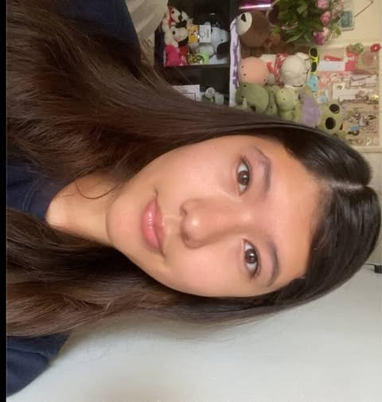

CSF Gallery
Celebrating our achievements, events, and community service activities. These photos showcase the dedication and excellence of our CSF members.
Our Moments of Excellence
President

Annual CSF Awards Ceremony - Recognizing academic excellence and community service achievements of our outstanding members.

I like to go out with friends on my free time. In the future I would want to be a lawyer. My favorite csf memory is going to the San Diego trip with my friends.
Vice President
In my free time, I like to play volleyball and spend quality time with my friends and family. In the future, I would love to do something related to law or psychology. My favorite memory of CSF was the San Diego trip as I got to have fun with my friends and explore.
Public Relations
I like to collect trinkets and doomscroll. In the future I'd like to earn a PhD in education or dentistry. My favorite csf memory is when we went to the San Diego Zoo.
Activities
Throughout my high school years I have learned to love marching band and its challenges, with the Rose Parade being one of them. With math being my favorite subject, I want to major in Applied Mathematics as well as Spanish, Latín, and Greek. As a CSF member since freshman year, my favorite memories are those from our San Diego Trips where we run to the bus because we are late. In my free time, I like to play my instrument and listen to music as well as helping out at my parish.

Throughout my high school years I have learned to love marching band and its challenges, with the Rose Parade being one of them. With math being my favorite subject, I want to major in Applied Mathematics as well as Spanish, Latín, and Greek. As a CSF member since freshman year, my favorite memories are those from our San Diego Trips where we run to the bus because we are late. In my free time, I like to play my instrument and listen to music as well as helping out at my parish.
Secretary

I'm Arydai but I go by Ary and I love to play volleyball and sleep. In the future I plan on working in a hospital as an ER nurse. My favorite CSF memory is going to the San Diego Zoo, exploring the whole place, and getting henna with my friends.
Treasury
I'm Christian Medina and I'm an incoming senior, I play volleyball and this is my first year as a csf officer. In the future I wish to become a corporate lawyer so that I could handle companies business. My whole life I've been dreaming of practicing law. I don't have many csf memories but I would say it would be selling the boxes of chocolates to go on the San Diego trip but I ended up having a schedule conflict which resulted in me not being able to attend.
About Our Gallery
These photographs capture the spirit and dedication of our California Scholarship Federation members at John Glenn High School. From academic recognition ceremonies to community service projects, each image tells the story of students committed to excellence in scholarship and service. Our CSF chapter is proud to document these meaningful moments that showcase the positive impact our members have on both their academic journey and the broader community.
If you have photos from CSF events that you'd like to share, please contact us through our social media channels or email. We love celebrating the achievements and contributions of all our members!